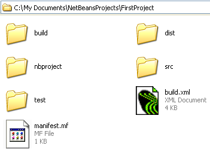
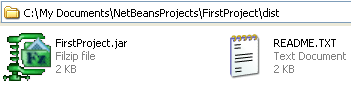

Sharing your Java Programmes
You can send your programmes to other people so that they can run them. To do that, you need to create a JAR file (Java Archive). NetBeans can do all this for you. From the Run menu at the top, select Clean and Build Main Project.
When you do, NetBeans saves your work and then creates all the necessary files. It will create a folder called dist and place all the files in there. Have a look in the place where your NetBeans projects are and you'll see the dist folder:

Double click the dist folder to see what's inside of it:

You should see a JAR file and README text file. The text file contains instructions on how to run the programme from a terminal/console window.
Now that you know how to run your java source files, let's do some programming.